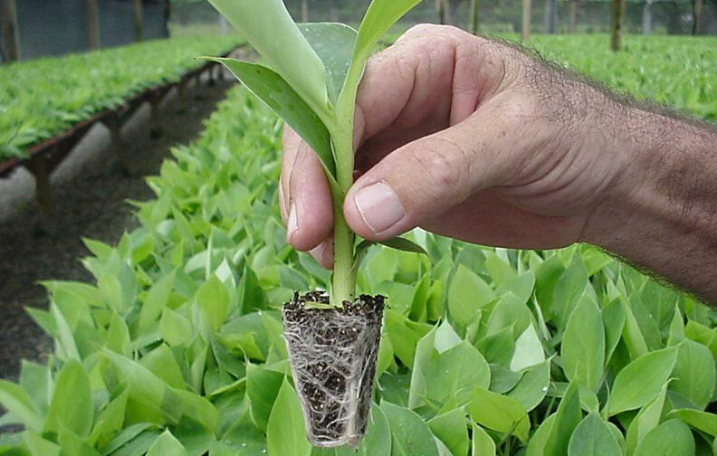

Banana Bhim
Banana (Musa sp.) is second largest fruit crop in the world. In India Banana ranks first in production and second in area of cultivation among all the fruits grown in India.
Why Tissue Culture Banana - Bhim?

- Producing and selling more than 8 million Tissue Culture Banana plants in India.
- Production Capacity: more than 10 million/annum.
- DBT certified Tissue Culture Lab.
- Holding 18 secondary hardening centres across India for timely delivery.
- In-house, latest virus testing laboratory.
- Highly qualified production and marketing team.
- Strong after sales technical support/ services.
- Dedicated transport service for prompt delivery
Benefits and Characteristics
- True to Type variety
- High yield and quality fruits
- Uniform and synchronized flowering
- Harvesting in 12 – 13 months
- Better market returns against quality fruits
- Disease free planting material
Cultivation Practices / Yield
- Soil type : Banana is a heavy feeder crop and can be grown well on wide range of soils, except very sandy and heavy black cotton soil with poor drainage
- Temperature: The optimum range of temperature is 15 degrees to 35 degree Celsius. The upper and lower limits are 40 degree C and 10 degree C, respectively.
- Variety : Grand Naine (G-9)
- Time of planting : Throughout the year, depending on the weather parameters like temperature, humidity, rainfall, wind velocity etc. Avoid planting in very low and very high temperature.
- Spacing : Depends upon vigorousness of variety, preferable 1.5m X 1.5m
- Days to flowering : 8 to 10 months after planting
- Harvesting : Bunch becomes ready within 2 to 4 months after flowering.
- Yield / Plant : Upto 35 kg / plant
Advantages of Tissue Culture Banana -
| Characteristics |
Conventional propagation through suckers |
Tissue Culture Banana - Bhim |
| Yield & Quality |
Low |
High |
| Variety |
Mixed |
True to type |
| Flowering |
Uneven |
Synchronous |
| Harvesting |
16-18 months |
12-13 months |
| Market price |
Lower |
Higher |
| Disease |
No guarantee |
Free from all diseases when supplied |
Banana Bhim Plus
BHIM PLUS is another variant of Grand Naine (G9) variety of banana
It is developed with specially formulated plant growth promoters.
The fruit length is bigger than other varieties. The plants are of
uniform type. This variant is launched in Year 2013
Why Tissue Culture Banana (BHIM PLUS) ?
- Producing and selling more than 60 lacs of BHIM PLUS brand of Tissue
- Culture Banana plants in India.
- Production Capacity more than 100 Lacs /annum
- DBT certified Tissue Culture Lab.
- Holding 10 secondary hardening centres across India for timely delivery
- In-house, latest virus testing laboratory
- Highly qualified production and marketing team
- Strong After Sales technical support services.
- Dedicated transport service for prompt delivery
- Plants requirement per acre: 1250
- Spacing: 1.5 m X 1.5 m.
- Planting: Year round
Specific attributes
- Developed with specially formulated plant growth promoters
- Average height (6.5 to 7.5 feet), Mature in 12-13 months
- High yield and bigger fruit length export quality fruits
*varies with field conditions